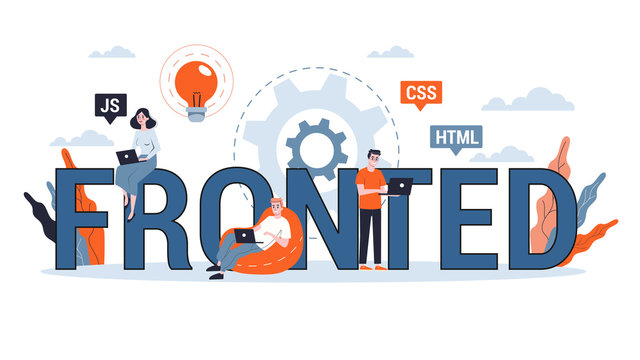

A Front-End Developer is responsible for building the visual parts of websites and web applications that users interact with directly. This includes everything a user can see on their screen, such as layouts, buttons, text, and images.
The main difference between front-end and back-end development is their focus. Front-end development deals with the appearance and user experience of a website, while back-end development focuses on the functionality and server-side logic that runs behind the scenes. Front-end is often referred to as client-side, whereas back-end is known as server-side.
Front-end development is primarily built using three core languages: